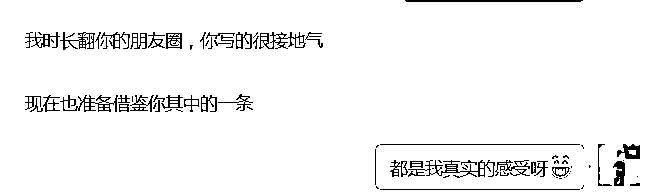

来源：https://yvgcwkuij9s.feishu.cn/docx/YIcVdx5HOogWqJxjBp7cFRp7nqh
各位玩赚新媒圈友好，我是粒晴（sea），玩赚新媒合伙人，家庭教育指导师，小白做知识付费月入过万。
之前我的能量很低，不断否定自己，自卑内耗的人。白天要去上班，下班回家要带娃，还要想尽办法跟婆婆斗智斗勇。今年30岁，励志要改变自己，开始付费学习。
自从加入玩赚合伙人，每天飞速进步，靠谱姐的销冠思维，芷蓝姐的战略布局，都给了我很大的帮助。
学习家庭教育已经3个月了，拿到了一个小结果，用户好评率极高。今天就在这里跟圈友们分享下！
下面分4个模块分享，家庭事业双丰收
1、从0-1，如何选择自己的定位
2、家庭教育这个蓝海赛道
3、离婚边缘到夫妻恩爱，孩子也内驱力十足
4、没有产品怎么做到3个月月入过万的
1、打破信息差，进到合适的圈子，看看现在最流行的搞钱方法是什么。
2、能去尝试的一定要动手去尝试，而不是想，这个不适合我，那个想要试试。
所有的精准定位都不是一步到位，是不断在事上磨，微调后的结果。
看到别人月赚10万，你肯定觉得合适，实践后又还没到月入10万的时候，你大概率可能会不喜欢。
3、一定一定要写朋友圈。最简单的练习就是在朋友圈记录自己的成长与收获。开始行动，你就成功了。
以下是个人真实的经历，尝试了十几个项目才找到自己的定位，笃定前行。
娃21年3月出生后的那段时间，每天都是度日如年，在孩子的奶粉，尿布，屎尿，熬夜，哄睡等中间拉扯。
我跟老公、婆婆的关系也非常的差，我也差点抑郁，跟老公也提过几次离婚。
这里面的日子有多难受我就不再多说了，很多经历过的都懂。
今年孩子大一点就一定要搞副业，只有自己腰杆硬了，才是树立自己地位的最有用的方法。
我迫切要改变，知道跟有结果的人学习是最快成功的方法。
开始在小红书找项目，信息差的鸿沟，那时候不知道玩赚，不然又可以节约2个月的时间和一笔钱。
一切都是命运的缘分，让我进到玩赚。里面大佬多如牛毛，各个赚钱跟捡钱一样。
后来才知道自己挺幸运，加入了一个这么好的圈子。
每天在玩赚看看帖子，看了一个月还没有结果，我越看越焦虑，看的我睡不着
每个月的训练营我都积极报名所有的项目，前后尝试了有十几个项目吧。
咸鱼二手书、小红书电商、抖音养生带货，公众号爆文，抖音中医号，英语启蒙动画片、小学暑假资料、胡兵IP抖音切片等等（帖子、训练营、朋友圈看到的各种项目）
这些风口上的项目变化很快，需要投入大量的时间和精力。
就比如带货吧，选品很关键，每天都得测品，换品。
我做了账号，也有数据，但是还没变现就坚持不下去，都觉得不是想要的。
这些平台一直在变，规则一直在变，这个月赚钱的项目，也许下个月就不赚钱了。
认知告诉我要做长期复利的项目，能有个人成长就更好，现实推着我赶紧赚钱，赶紧选一个项目就开干吧。
如果我有一项专业的技能，那我的能力越来越强，我的付费用户也在微信积累，即使是这些平台规则在变，对我影响也不会太大。
这也开始让我意识到要修一门专业，逐渐放弃这种赚快钱，围绕着平台转的项目。
想通一件事：一定要围着项目找平台，不能只围着平台转，太累了。
7月底在靠谱的朋友圈看到有盖洛普优势的活动，虽然不明白是什么我又去参加了。
优势教练给我分析：我内心比较匮乏，一直在向外求，所以很难满足。
以及，点破我除了赚钱，还有一个目的就是内心的安宁，和自我的成长。
只是赚钱没有成长的项目，我肯定做的不开心，只是多打一份工而已。（是不是有点矫情）
当时对优势教练非常感兴趣，自身成长+长期复利+副业变现，都满足条件。
于是我付费了998的基础课程开始学习，也开始慢慢的几天发一条朋友圈，了解到自己的优势，突破了发圈的卡点。
虽然这个阶段都没有变现，但我越来越清晰自己想要的是什么。
综合自己是宝妈，对育儿、泛心理、女性成长都有兴趣，最后各种综合考虑选择了家庭教育
这个赛道这几年基本处于一个越来越受关注的行业，也特别是宝妈们喜欢做的一个赛道。
不管是职场宝妈想做副业，还是全职宝妈想做个人发展，都是一个很好的选择。
一方面自学自用，把自己孩子养好，一方面做好了也能变现，成为一份职业。
感性上我看好家庭教育的，可是，做事业，感觉很重要也不能全凭感觉。
于是，我当时做了一些行业调研工作，分享给大家。
希望能给对家庭教育赛道感兴趣的朋友提供一些借鉴。不感兴趣的也可以跳过了。
我首先是在生财上家庭教育合集，看到很多有结果的大佬分享的经验，注入了信心
越来越多孩子心理问题出现在新闻上。
我自己的亲侄女高二，大家都觉得是个开朗的女生，竟然是学校心理咨询室的常客，三番五次上过天台。
综合我自己的亲身体验，是有市场需求的。
在2022年家庭教育指导师已成为新的黄金行业首选、新东方、高途、作业帮都在入局
而且现在都还没有一个头部，全都是自立门户
很多学校也在开始举办家庭教育的讲座
政策在哪里，商机就在哪里，哪里就需要人才
欧美国家每300人就拥有1名家庭教育指导师，全美国拥有家庭教育指导师80万人 。
中国按这一标准， 家庭教育指导师人才缺口460万。
看完这些信息我觉得真的适合，属于越老越吃香，还能帮助自己教育好孩子，属于可以当做事业来做的副业。
看到这样懂我、鼓励我的老公，真的很难想象3个月前我们还闹着想分开。
之前我是一个能量很低，不断否定自己，自卑内耗的人。
白天要去上班，下班回家要带娃，还要想尽办法跟婆婆斗智斗勇，。
老公上班比较忙，也是早出晚归的，对家里的事情不闻不问，是一个缺席的父亲，也是一个缺席的老公。
如果说我跟他妈有争吵，他也是帮着他妈，不会帮我，这让我也很生气。
现在的泪都是之前脑子进的水。以前对自己的婚姻有多期待，现在就有多失望。
虽然之前看到父母经常吵架会很讨厌，也一直想让自己避免循环这种模式，但我还是重蹈覆辙了。
每天都在后悔自己嫁错了人，如果嫁个更优秀的，父母更有文化的，我会不会就好一些。
育儿育己，学习后，内耗不自信都好了很多。
开始每天坚持早上5点起床，每天动力满满的学习家庭教育专业知识和自媒体运营的知识。
每天去公司以后，工作效率更高了，空出更多时间做副业。
情绪调节好了，家里的家庭琐事，日常带娃等事情，干起来也特别的顺利，不会觉的累。
之前我跟我老公的关系比较疏离，也根本没有二人世界，跟上下铺兄弟一样。
学习后，我知道夫妻关系是一个家庭的核心，我必须要处理好。
自从我有这个意识后，我开始借用孩子作为调节剂改善很多。
稍微一点点的改变，我老公就发生了巨大的变化
开始主动的关心我，主动的夸赞我，给我转账，带我出去吃饭等等。
孩子也从之前的脾气暴躁，只挂在妈妈身上，爸爸都哄不到他。
现在情绪稳定，每天主动阅读，周末总是要去图书馆看书，也经常指定要爸爸带了。
也许这些听起来很平常，但是对于我来说，确实是久违的幸福。
国庆后开始学习，听@靠谱的话，扎扎实实发了两个月的朋友圈。
11.30号终于有了第一个客户付费398 。40岁的姐姐，关注我朋友圈的分享，为自己退休后做规划
我这边好几个付费学员，都是考了家庭教育指导师，心理咨询师证书，但是都没变现，一分钱没赚到。
他们都很好奇我如何从0开始学习，也没有自己的产品，这么快就能实现月入过万？
两个字：借势
大多数人刚开始都不知道自己能做什么，没有特长，没有产品
实体店最常见的就是去进货，去加盟。这样风险最低，利润最高，对吧
其实在线上做知识付费也是一样的，加盟平台，去分销大佬的产品
只是把门店换成了微信，朋友圈就是你的门面
你什么名气都没有，即使吭哧吭哧做了一个产品出来，也不一定卖的出去
但是大佬的产品本来就有影响力，如果从你这里买你再送一个自己的终身陪伴群
即使你什么都不会，那也有陪伴呀
今年看见好几个大佬都是靠分销别人的产品从0起步的，这就是借势
其实我刚刚加入玩赚合伙人，芷蓝姐、靠谱给我的定位也是教别人做副业，去分销大佬的产品。
但我当时认知低，觉得自己都没有试过，还要去推销，有卡点。而且一门心思想要有自己的课程，就放弃了这个项目。
不断尝试风口项目后，考虑要拥有自己的一技之长，找个专业学习和深耕，就定位到了家庭教育。
也学会了借势，借助平台的力量，帮助我完成产品和服务，就可以大大缩短收入闭环路径。
不至于学习一年都没有收入，不敢招生，以及招生了又担心不能解决他的问题
所以我加入了爱能圈，解决了我的产品，成交和服务问题，3个月不到就月入过万。
一定要学会借势，借势可以让你快速赚到第一笔，得到正反馈，才能持续的做下去。
证书只是理论知识，跟真正的解决用户问题还不一样。
如果后续做起来了，可以再把证书补上。不要一开始就自己增加赚钱的门槛，到最后就直接放弃了。
还有一个就是大家最关心的流量问题，微信只有亲戚朋友怎么办？微信只有几百人怎么办？
哪个大佬的微信不是从0开始的呢，我们不做自媒体的时候谁也不会没事去加别人微信
所以没关系，当下开始去做，一年后你也会收获满满。
线上引流主要分为两种，一类是公域引流，一类是私域。
公域引流就是去小红书，抖音，知乎等平台引流，门槛较高，效果因人而异。
任何平台都是有规则的，如果你靠自己去摸索，跟那些每天操作200个小红书账号的人battle。
你觉得你能跑的赢吗？最好的方法就是跟着老师学习。
知道基础理论后还要每天去执行，在实际操作中不断的精炼
跟对老师+执行力拉满 就是最快的成功路径
私域就是在自己的同学群，社群等地方去秀肌肉，做苦力，做工具人，显眼包，让别人看见你。总会有人愿意链接你的。
社群里有人主动自我介绍的时候，就去加上，这个时候默认了他是欢迎你来链接的。
群主发言了及时的捧场，输出自己的复盘，或者整理好分享合集等等
朋友圈不发，社群里默默潜水，更不要说去私聊别人主动推销，那你觉得别人凭什么付钱给你呢
在5000个微信之前不谈质量，等5000人以后再把不付费，难缠的人都删了，更换池塘的人
再就是朋友圈，朋友圈就是我们的门面，一定一定要运营起来
我知道朋友圈这块很多人有卡点，不敢发，怕打扰别人
因为我曾经也这样，屏蔽了各种人，一天发一条都觉得多了
我们在什么时候会觉得不好意思呢？在获取别人，打扰别人的时候。
那如果我们的分享是利他，能帮助到别人，你还会觉得不好意思吗。
不会！别人反而会感谢你，看你的朋友圈收获很多

哪有卖东西不开门的呢。
真诚、利他的分享出自己的感悟就是最好的。
慢慢的就会筛选出跟你同频的人，我的成交基本上是靠朋友圈吸引，大家上来都是直接付款的
我也是在刻意练习，每天保持输出3条，坚持3个月了，如果你能力够一天5-8条都可以。
刚开始一个月没人点赞，也没人评论，我也不知道自己写的怎么样。
一个月后就陆陆续续收到不同的人给我反馈，说我的朋友圈很真诚，经常会去翻。
到2个月开始有人直接打钱，过来就问你有产品吗
你是30分的水平那就吸引30分以下的人，不用觉得自己跟80分的大佬差距太大。
你也有自己的优势，大佬不可能覆盖完所有人群的
之前尝试过生财精华社群分享，收了大概10个人19.9，我分享了2个月就分享不下去了
钱不多，但是责任才干靠前的我很内疚，于是对于社群一直有卡点。
在一个活动契机下我准备先拉免费社群（大家都不建议做免费社群），但是我想着一步一步来，先开始做
我拉这个群的最初始的行动，那一万多人，你们猜猜，能有多少人回复我呢？
发了两天，触达3000多人，要进群的大概5个人。
我甚至怀疑是不是自己不会搞群发，没有发到别人手上，还测试发到我爸妈微信上。
刚开始拉群的时候每天发圈，在我最新的生活号有一些社群的同学，拉了60多个人
周一到周五开始分享干货，到现在1个月，已经满200人，也给我带来了上万的收益。
社群的运营有一定的难度，不知道分享什么，分享了没有人响应，等等
但执行力第一的我更喜欢直接干，干的过程中再不断的调整，也慢慢的有了自己的社群分享节奏
真诚，利他的社群+朋友圈，就能占领用户心智、有朋友看我每天坚持分享，私下给我发红包
也有人主动把自己的朋友，老公拉近群里的
小白也能有自己的优势和空间，2024年，我们一起加油，活出独立女性的样子。充实快乐、左手家庭右手事业，育儿搞钱都不耽误。
我是粒晴，一个普通但又不服输的职场宝妈，喜欢搞钱，喜欢高认知的人和知识，如果对我感兴趣，欢迎来和我链接，见证成长，未来一起努力！